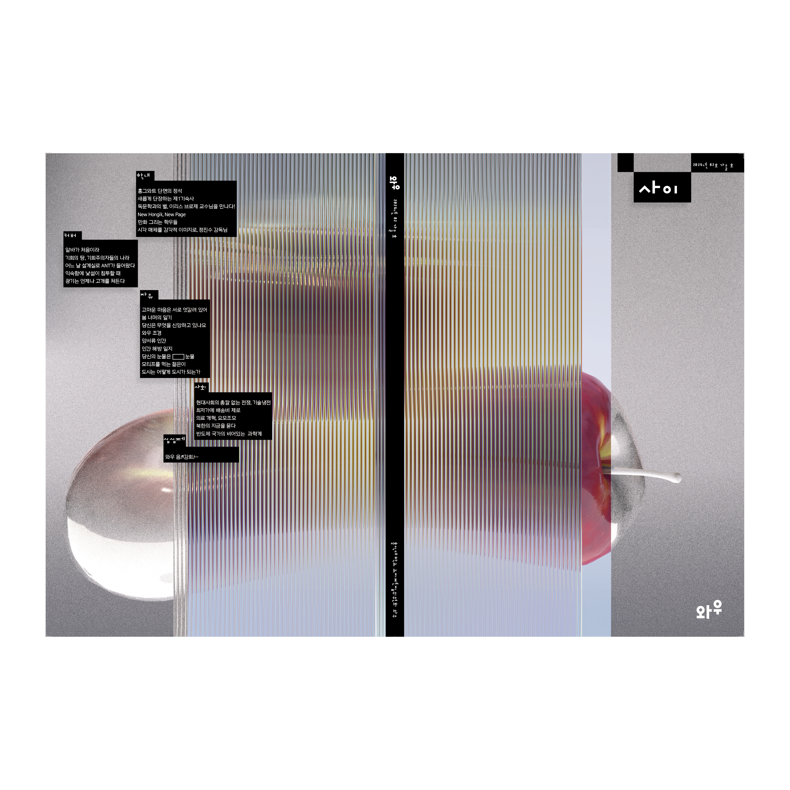

Magazine WOW
“WOW” is a quarterly school magazine published twice a year—in spring and fall—by the Hongik University Editorial Committee, starting from its first issue in 1951. Each issue of “WOW” features in-depth coverage of a wide range of topics and presents various experimental visual designs that reflect the chosen themes. The theme of WOW No. 82 is “Between.” It represents imperfection during a period of transition. The areas of gray noise are actually unrendered parts in Cinema 4D. Combined with the blurred projection of fruit through glass, they visually express ambiguity and immaturity.
